Como executar
- Confira se o Java está instalado com
java -version(8 ou mais novo). - Baixe o
fastfood-manager-1.0.0.jarpelo botão acima. - Abra com dois cliques ou pelo terminal:
java -jar fastfood-manager-1.0.0.jar
- Na primeira tela, clique em Criar conta, cadastre um usuário e entre com ele.
O banco fica em ~/.fastfood-manager/fastfood.db (no Windows, C:\Users\<usuário>\.fastfood-manager\fastfood.db). Para usar outro arquivo: java -Dfastfood.db=meu-banco.db -jar fastfood-manager-1.0.0.jar.
Passo a passo
Capturas do jar da versão 1.0.0 rodando no Windows, com dados de exemplo.
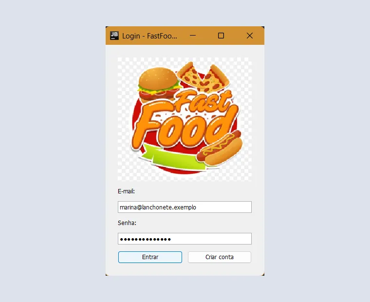
-
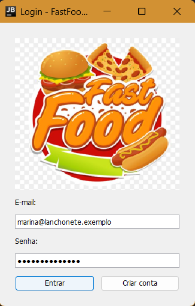
Login por e-mail e senha. A senha é conferida contra um hash PBKDF2 com salt. -
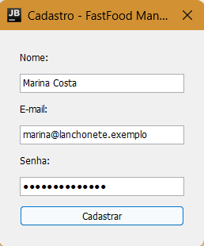
Criar conta abre uma janela modal com nome, e-mail e senha. E-mail repetido é recusado. -
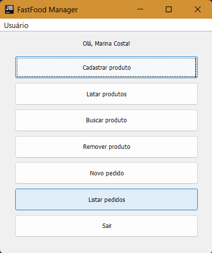
Menu principal, com saudação ao usuário logado e todas as operações. -
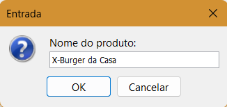
Cadastrar produto: primeiro o nome. -
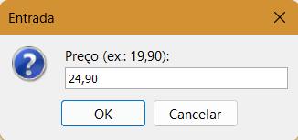
Depois o preço. Aceita vírgula ou ponto e pede de novo se o valor for inválido. -
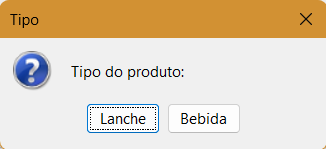
O tipo define a subclasse: lanche (vegano ou não) ou bebida (alcoólica ou não). -
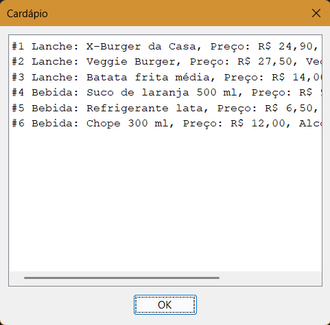
Listar produtos mostra o cardápio vindo do banco, com o tipo de cada item. -
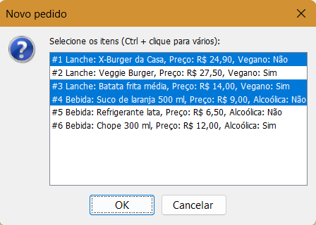
Novo pedido: seleciona vários itens da lista com Ctrl + clique. -
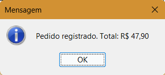
O pedido é gravado com os itens e o total calculado. -
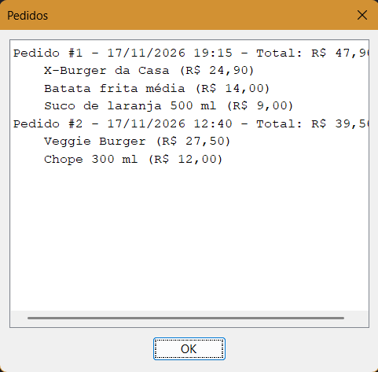
Listar pedidos traz cada pedido com data, total e itens. -
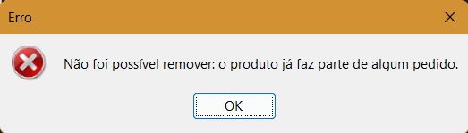
Um produto que já está em algum pedido não pode ser removido: a chave estrangeira no banco impede.